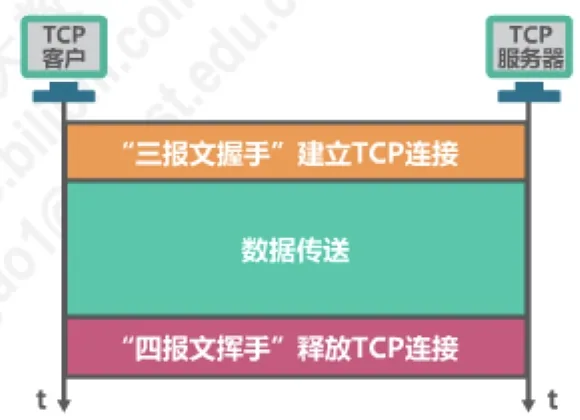
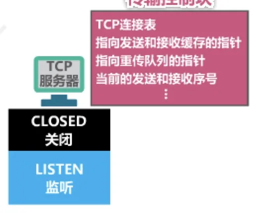
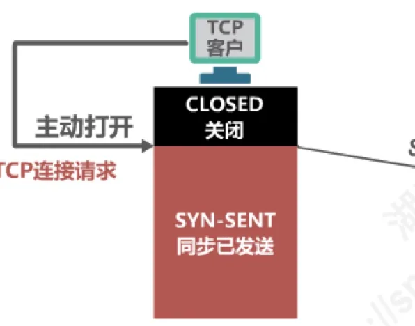
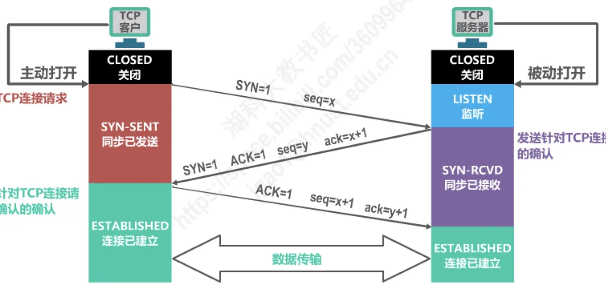
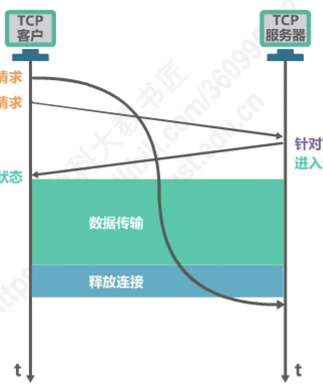
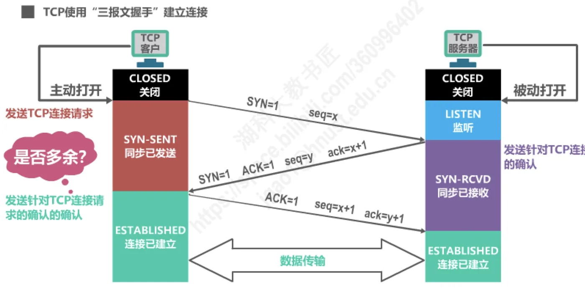

计算机通信与网络 · 第 5 章 运输层
5.8.1 TCP的运输连接管理 —— TCP的连接建立
传输控制协议 TCP（Transmission Control Protocol）是面向连接的协议，它靠一条运输连接来传送数据，因此「先把连接建起来」是每一次 TCP 通信的头一件事。本节沿着三报文握手的过程走一遍：从双方所处的初始状态出发，看三个报文段各携带什么、状态怎样迁移，再回答一个常被追问的问题——第三次握手究竟是不是多余的。把这里读透，5.9 节 TCP 报文段首部里的 SYN、ACK 这些标志位才算有了着落。
1. TCP 运输连接的三个阶段
TCP 是面向连接的协议，它基于运输连接来传送 TCP 报文段。也就是说，两个使用 TCP 的应用进程在互相传送数据之前，必须先建立一条运输连接；这条连接的建立和释放，是每一次面向连接的通信中必不可少的过程。
沿着时间轴看，一条 TCP 运输连接的一生分成三个阶段：①建立 TCP 连接，用「三报文握手」完成；②数据传送；③释放 TCP 连接，用「四报文挥手」完成。所谓 TCP 的运输连接管理，就是使运输连接的建立和释放都能正常地进行——连接没有正确地建起来，后面的数据传送和释放都无从谈起。

建立连接之所以要「握手」，是因为客户和服务器谁都不掌握对方的全部信息，只能通过一来一往地交换报文段把话讲清楚。本节只讲第一阶段，第三阶段的「四报文挥手」留到下一节 5.8.2 讨论。
2. 连接建立要解决的三个问题
握手不是走形式，它要同时解决三件事：
- 使 TCP 双方能够确知对方的存在；
- 使 TCP 双方能够协商一些参数，例如最大窗口值、是否使用窗口扩大选项和时间戳选项，以及服务质量等；
- 使 TCP 双方能够对运输实体资源（如缓存大小、连接表中的项目等）进行分配。
这三件事都必须赶在数据传送开始之前办妥。不知道对方是否在线、没谈好窗口与各种选项、没把缓存和连接表项分配出来，数据就没有地方暂存，也谈不上按什么规则收发。所以连接建立阶段交换的报文段虽然不携带应用数据，它办的事情却一点都不少。也正因为如此，那些只能在连接建立时协商的选项（如窗口扩大选项、时间戳选项）一旦错过这个时机，就没有再补谈的机会了。
3. 传输控制块 TCB 与连接表
在动手握手之前，先看双方手里有什么。客户还没有开始连接时处于 CLOSED（关闭）状态；服务器虽然随时准备接受连接，但它并不知道哪个客户会在什么时候找上门来，于是先执行一次被动打开（passive open），从 CLOSED 进入 LISTEN（监听）状态，静候客户的连接请求。
每建立一条连接，双方都要为它保存一份「档案」，这就是传输控制块 TCB（Transmission Control Block）。TCB 中存放的信息包括：指向发送缓存和接收缓存的指针、指向重传队列的指针、当前的发送序号和接收序号等。服务器可能同时面对成百上千个客户，于是把各条连接的 TCB 组织成一张 TCP 连接表；收到报文段时，用「源 IP 地址、源端口号、目的 IP 地址、目的端口号」这四项在表中查出它属于哪条连接——这正是 5.2 节所讲端口号与复用、分用在连接管理上的落地。
可见，连接建立的过程同时也是双方在自己的连接表里建好 TCB、把资源分配出去的过程；连接释放时，这些资源再被收回。记住这一点，后面「失效的连接请求为什么会导致资源浪费」就好懂了。

4. 第一次握手：客户主动打开，进入 SYN-SENT
客户要访问服务器，就执行主动打开（active open），向服务器发送一个 TCP 连接请求报文段。这个报文段置同步标志位 SYN=1，序号 seq=x。这里的 x 是客户自己选定的初始序号 ISN（Initial Sequence Number）：它不是从 1 开始数，也不表示已经传送了 x 个字节，而是这一方向上数据的起点，由客户根据自己的情况指定。报文段发出后，客户进入 SYN-SENT（同步已发送）状态，等待服务器的确认。此时连接尚未建立，客户所知道的仅仅是「我把请求发出去了」。

注意图 3 中两个角度的说法：同一件事，从客户这边看叫主动打开，从服务器那边看叫被动打开。图 3 把两个方向的动作并排画了出来，后面每一步都在这个框架里进行。
5. 第二次握手：服务器确认请求并发出自己的请求
服务器收到这个 SYN=1 的报文段，如果同意建立连接，就发回一个报文段：SYN=1，ACK=1，seq=y，ack=x+1。它一身兼二职，两个标志位都要看懂：
- ACK=1 表示确认，确认号 ack=x+1，意思是「你序号为 x 的那个连接请求我收到了，请下次从 x+1 开始发」。为什么是 x+1 而不是 x？因为 TCP 规定 SYN=1 的报文段不能携带数据，但要消耗掉一个序号（见第 8 节），客户下一次发送的起始序号自然就是 x+1。
- SYN=1 表示服务器也在发出自己的连接请求，seq=y 是服务器自己选定的初始序号 ISN。y 与客户选定的 x 之间没有任何换算关系，取什么值由服务器随意指定。不妨用 x=11220 来看：服务器回的确认号必须是 11221（即 x+1），而它的 seq 写成 11221 或者别的任何数值都合法——那只是 y 恰好取了这个值，绝不是「在 x 上加一」。
报文段发出后，服务器进入 SYN-RCVD（同步已接收）状态。此刻连接仍未建立：服务器已经确知客户的存在，也把自己的初始序号告诉了客户，但它还不知道客户是否收到了自己的确认——这个悬念要留到第三次握手才能解开。
6. 第三次握手与双方进入 ESTABLISHED
客户收到服务器的 SYN 与 ACK 之后，还要再发一个报文段作为确认：ACK=1，seq=x+1，ack=y+1。它不再置 SYN，因为它不是新的连接请求，而是一个普通的确认报文段。报文段一发出，客户就进入 ESTABLISHED（连接已建立）状态；服务器收到这个确认，才跟着进入 ESTABLISHED。至此，双方都确知了对方的存在、都知道了对方的初始序号，连接建立完成，可以开始传送数据了。
把三步连起来看，客户比服务器早一步进入 ESTABLISHED，这既是三报文握手与「两次握手」的分水岭，也是第 7 节那个问题的根子。

（1）三个报文段与状态迁移对照
| 步骤 | 报文段 | 两端状态 |
|---|---|---|
| 第一次握手 | 客户 → 服务器：SYN=1，seq=x（此时不带确认号） | 客户：CLOSED → SYN-SENT |
| 第二次握手 | 服务器 → 客户：SYN=1，ACK=1，seq=y，ack=x+1 | 服务器：LISTEN → SYN-RCVD |
| 第三次握手 | 客户 → 服务器：ACK=1，seq=x+1，ack=y+1 | 客户：SYN-SENT → ESTABLISHED；服务器由 SYN-RCVD → ESTABLISHED |
x 是客户自己选定的初始序号，y 是服务器自己选定的初始序号，两者互不相干。把这张表与图 4 对着记：客户端的动作是「发 SYN → 收 SYN+ACK → 发 ACK」，服务器端则是「监听中收到 SYN → 发 SYN+ACK → 收 ACK」。
把这条刚建好的连接放回整个生命周期来看，就得到图 5 那条时间线：客户发出 TCP 连接请求，服务器针对请求给出确认，双方先后进入连接已建立状态，接着是数据传输，最后释放连接。图中画的是浏览器访问万维网服务器的情形，也是我们日常上网时每一次请求背后都在发生的事（万维网与 HTTP 见 6.7 节）。

7. 第三次握手是多余的吗
看到这里很容易产生一个疑问：前两次握手已经让双方互相确认过了，第三次握手是不是多余的？

不多余。它的作用是防止已失效的连接请求报文段突然又传送到服务器，因而导致错误。设想这样一幕：客户早先发出的某个连接请求报文段在网络中滞留了很久（比如途经的链路拥塞，报文段被压在了缓存里），客户迟迟等不到确认，已经超时放弃、不再需要这条连接了；可是后来，这个早已失效的请求却突然到达了服务器，而且服务器完全无法从报文段本身看出它已经失效。
如果只握手两次，服务器一收到请求就建立连接、分配资源、进入连接已建立状态，而客户那边根本不予理睬，仍停留在关闭状态。结果是服务器单方面维持着一条对方并不承认的连接，白白占用缓存和连接表项，这就是资源浪费。有了第三次握手，情况就不同了：服务器发出 SYN 与 ACK 之后先停在 SYN-RCVD，是客户用第三个报文段明确告诉它「这个请求确实是我发的，我愿意建这条连接」，服务器才真正建立连接、分配资源。换句话说，第三次握手是双向确认的最后一环，缺了它，服务器就可能为一个根本不存在的连接白忙一场。
8. 两条关于序号的规定
TCP 的标准对握手过程中的序号有两条硬性规定，前面那些 seq 与 ack 为什么这样写，正是由它们决定的：
- （1）SYN=1 的报文段不能携带数据，但要消耗掉一个序号。所以客户发过 seq=x 的连接请求之后，它下一次发送的起始序号是 x+1，服务器的 y 之后则是 y+1；也正因为这个 SYN 消耗掉了一个序号，服务器才会用 ack=x+1 来确认它。
- （2）普通的确认报文段如果不携带数据，则不消耗序号。第三次握手的报文段（ACK=1，seq=x+1）正属于这种不带数据的普通确认，它不消耗序号，因此客户随后发送的第一个数据报文段，序号仍然是 x+1，不会继续往后挪。
两条规定合起来看很有意思：前两次握手都置了 SYN，各自消耗一个序号，双方的序号都朝着数据起点「前进一格」；第三次握手是普通确认，不消耗序号，于是它不会把数据的起点再往后推。序号换算是握手过程里最容易出错的地方，把这两条规定记牢，ack 与 seq 之间那个「1」的来龙去脉就清楚了。
本节小结
- TCP 面向连接，一条运输连接要经过建立（三报文握手）、数据传送、释放（四报文挥手）三个阶段，连接管理就是让连接的建立和释放都能正常进行；
- 连接建立要解决三个问题：确知对方的存在、协商参数（最大窗口值、窗口扩大选项、时间戳选项、服务质量等）、对运输实体资源（缓存、连接表中的项目等）进行分配；
- 双方各有一份传输控制块 TCB，服务器用 TCP 连接表把各条连接的 TCB 组织起来；服务器被动打开后处于 LISTEN，客户执行主动打开时从 CLOSED 出发；
- 三报文握手的过程：①客户发 SYN=1、seq=x，进入 SYN-SENT；②服务器回 SYN=1、ACK=1、seq=y、ack=x+1（y 由服务器自己选定，与 x 无关），进入 SYN-RCVD；③客户回 ACK=1、seq=x+1、ack=y+1，进入 ESTABLISHED，服务器收到后也进入 ESTABLISHED；
- 第三次握手不多余：它防止已失效的连接请求报文段突然到达服务器，使服务器在没有得到客户最终确认的情况下建立一条无人使用的连接、白白浪费资源；
- 两条序号规定：SYN=1 的报文段不携带数据但要消耗一个序号，普通确认报文段不携带数据则不消耗序号——这正是 ack=x+1 以及数据段仍从 x+1 起步的原因。下一节 5.8.2 讲连接的释放。